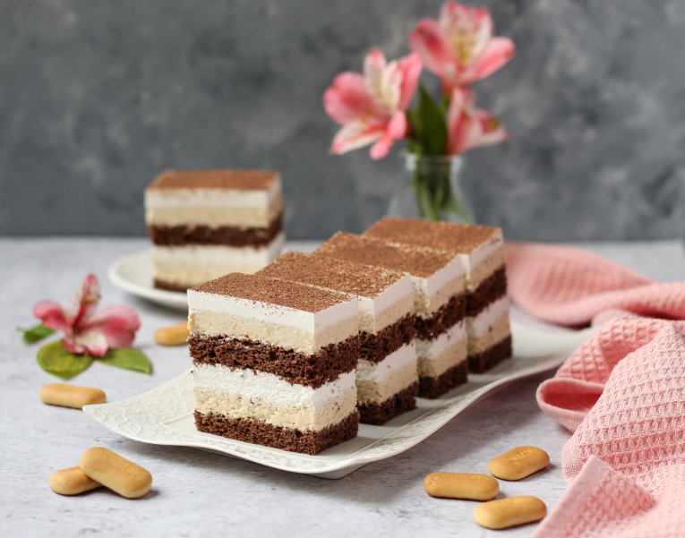

Umutiti 5 bjelanjaka u snijeg, dodati 5 kašika šećera i mutiti dok se ne otopi. Dodati žumanjke i mljevene orahe.
Pomiješati brašno, prašak za pecivo i kakao te lagano dodavati u smjesu. Peći u plehu (25×40 cm) na 190°C. Napraviti ukupno 4 kore.
Prvi fil: umutiti pavlaku sa šećerom u prahu, dodati mljevenu plazmu i umućeni šlag s kiselom vodom.
Drugi fil: umutiti šlag krem s kiselom vodom.
Slaganje: koru preliti čokoladnim mlijekom, dodati prvi fil pa šlag. Ponavljati postupak dok se ne potroše sastojci.
Cijelu tortu premazati šlagom i dobro ohladiti prije posluživanja.